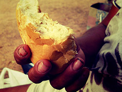
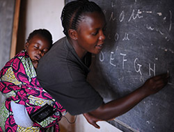
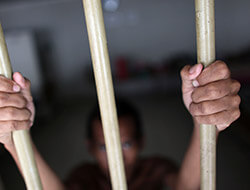

منجزة
الاستجابة للطوارئ والأزمات
عملية ميدانية منجزة في بورتسودان وعطبرة: توزيع طرود غذائية ومستلزمات طبية وملابس ومساعدات نقدية.

برنامج مستمر
الدعم الصحي والإسعافات الأولية
جهود لتيسير الوصول إلى الرعاية الصحية الأساسية في المجتمعات الهشة وتقديم دعم الإسعافات الأولية للفرق الميدانية.

برنامج مستمر
دعم الأسر النازحة
مساعدات إنسانية طارئة ودعم للاحتياجات الأساسية للأسر النازحة بسبب الحرب.
برنامج مستمر
التعليم وتوعية المجتمع
أنشطة تعليمية وتوعوية لإطلاع المجتمعات المحلية على قضايا الصحة والسلامة العامة.